NLP in production
A couple of things to think about
Angelo Basile
17-04-2020
About me

Junior research scientist at Symanto Research GmbH.
api.symanto.net/docs
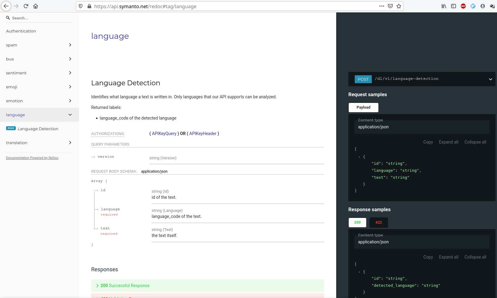
Outline
- Large models perform well, but how to use them at scale?
- How to monitor their performance on new, streaming data?
- How can we simplify the infrastructure required by these models?
Background
"As the machine learning (ML) community continues to accumulate years of experience with live systems, a wide-spread and uncomfortable trend has emerged: developing and deploying ML systems is relatively fast and cheap, but maintaining them over time is difficult and expensive".
(Sculley, et al., 2015)
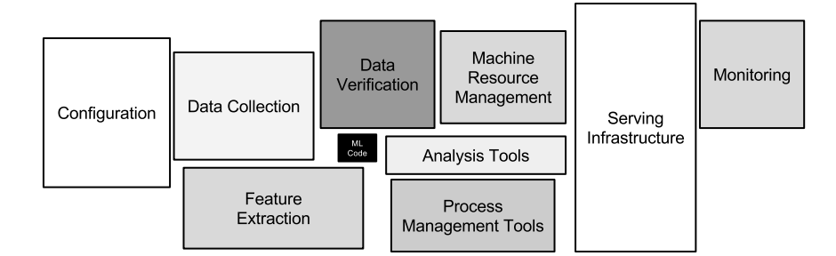
(from Sculley, et al. 2015)
Large models
Works well, but…
- GPU intensive
- slow, e.g. \(O(n^2)\)
- large, e.g. > 400 MB
What to do about large models?

Use something else
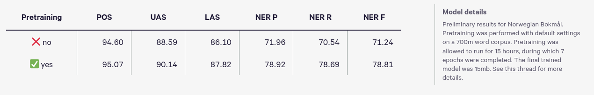
(Source: https://explosion.ai/blog/spacy-v2-1)
Quantize
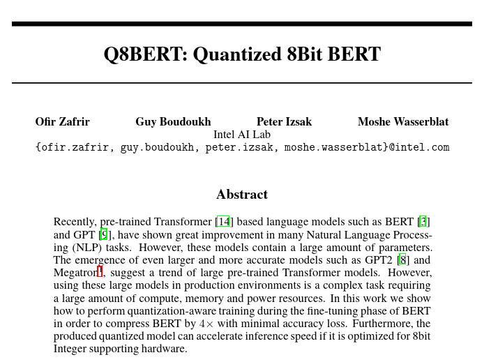
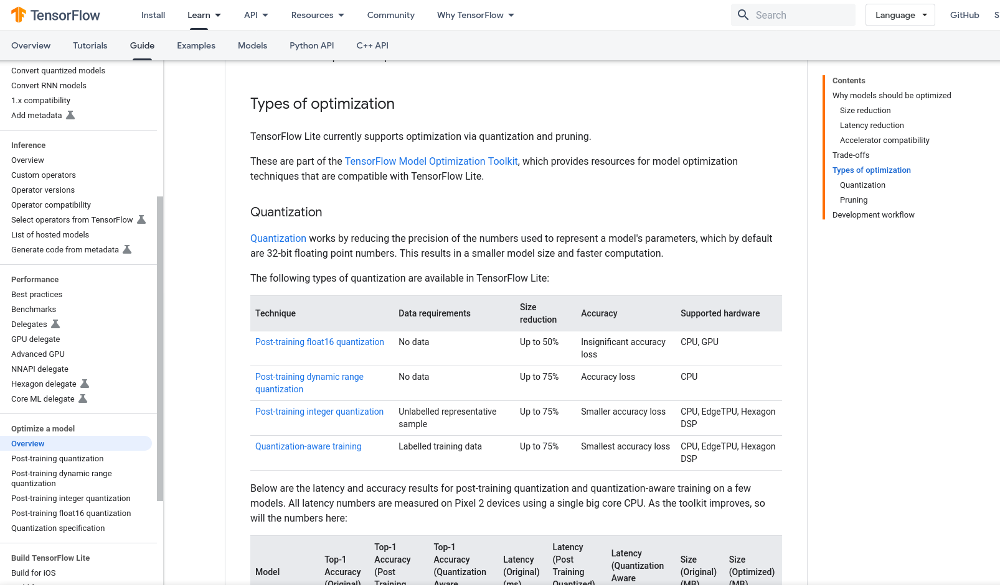
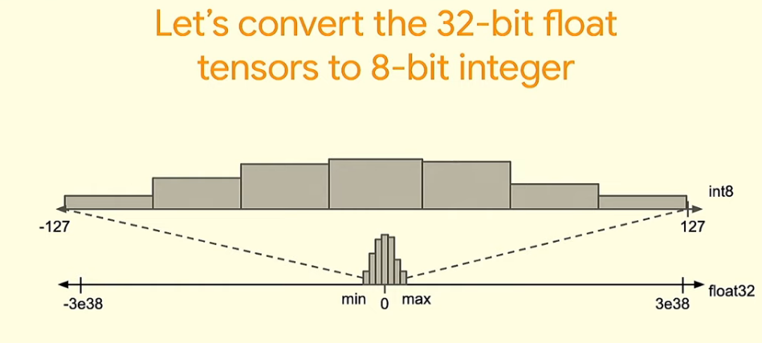
(Source: tensorflow.org)
Dropout
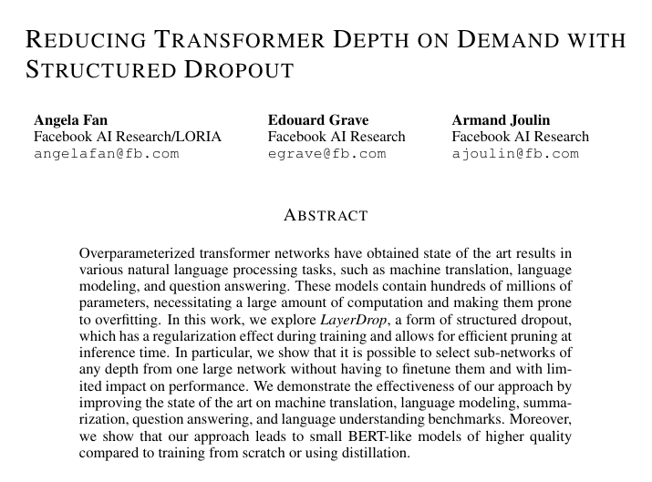
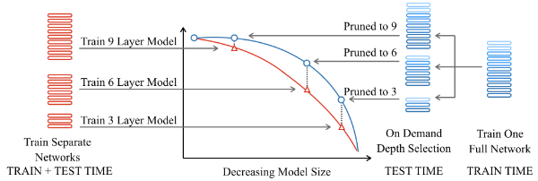
(Source: Fan et al., 2019)
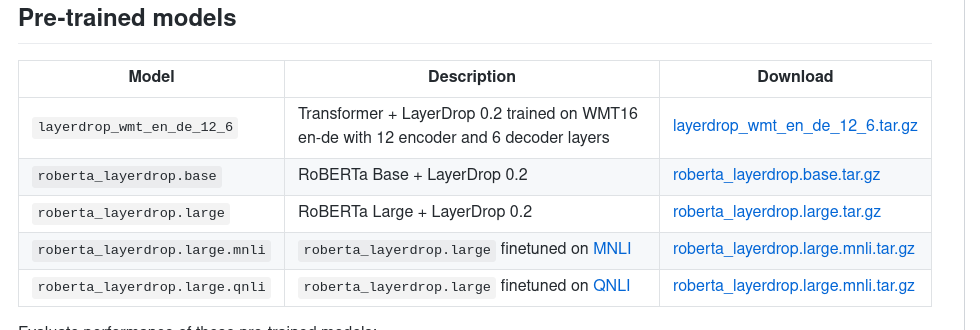
Distill

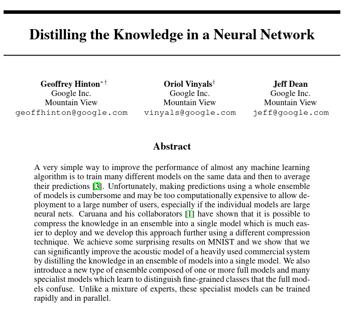

Results 📊
| dataset | cnn char hard label | bert hard label | student |
|---|---|---|---|
| task 1 | 92.40 | 95.80 | 96.00 |
| task 2 | 92.20 | 96.00 | 95.00 |
| task 3 | 89.40 | 95.20 | 95.00 |
| task 4 | 96.00 | 97.70 | 97.00 |
F-1 scores: the higher the better.
Size 🗜️
| model | N. of params | MB |
|---|---|---|
| bert | 112,305,852 | 429 |
| cnn | 5,451,654 | 21 |
| student | 5,451,654 | 21 |
Inference time ⏱️
| model | seconds/1000 instances |
|---|---|
| cnn hard label (GPU) | 1.21 |
| cnn hard label (CPU) | 1.71 |
| BERT hard label (GPU) | 9.98 |
| BERT hard label (CPU) | 112.06 |
| student (GPU) | 1.33 |
| student (CPU) | 1.74 |
Some tips for a good distillation
- pick a student who is not too big…
- …but also not too small
- it should be expressive enough to solve the problem by itself
- use probabilities
- augment the data as much as possible
Pros 😍
- no need to change the model
- no constraints on what operations you can use
- works with every pretrained model (in principle…)
Cons 🙄
- you need to train a new model
Infrastructure

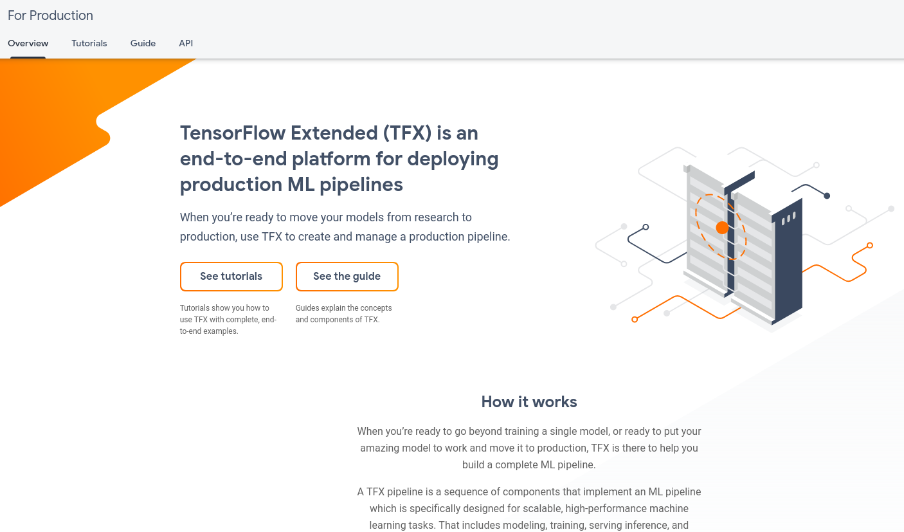
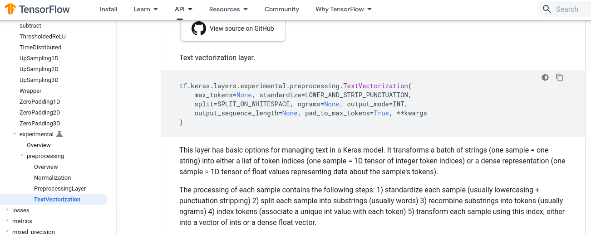
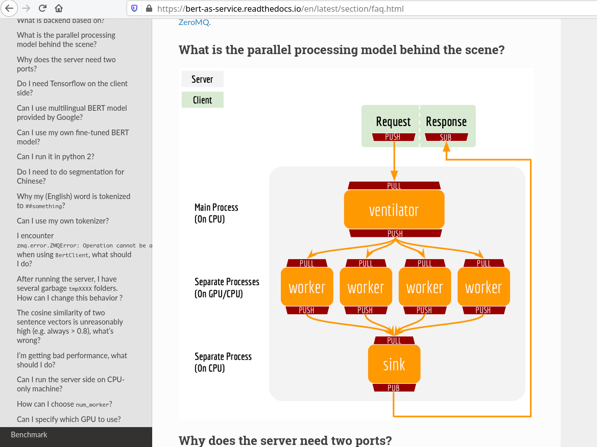
Embed the preprocessing in the model
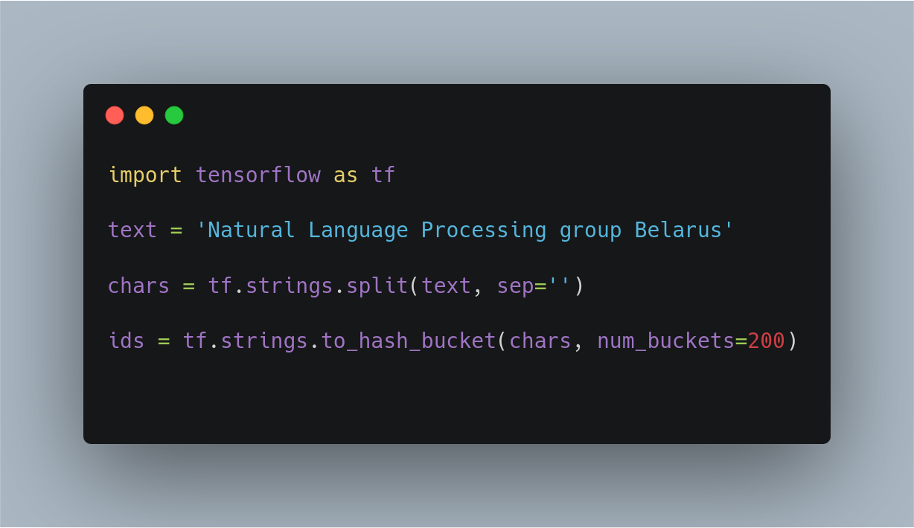
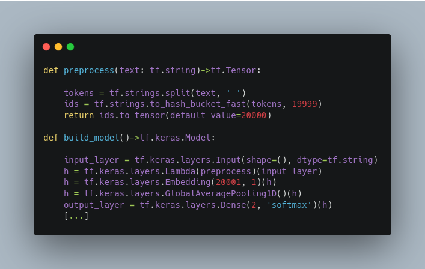
Quality control
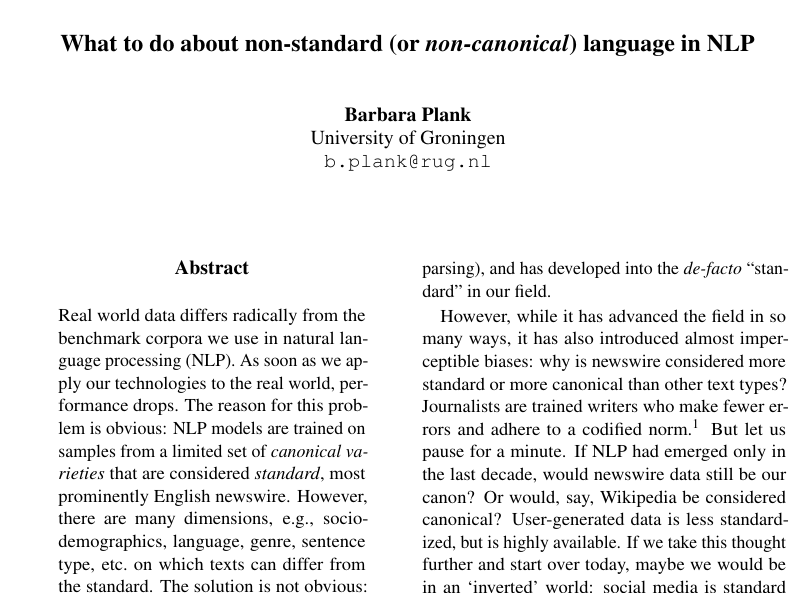

(Source: https://arxiv.org/abs/1608.07836)
Probability comes to the rescue

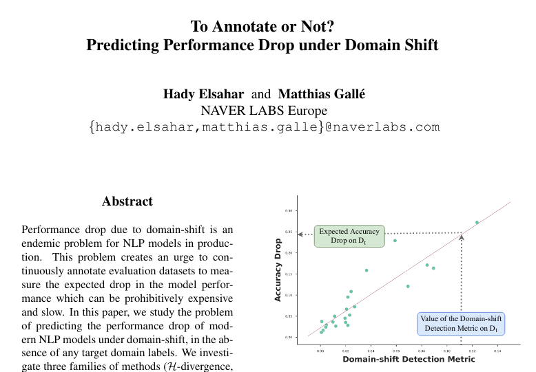
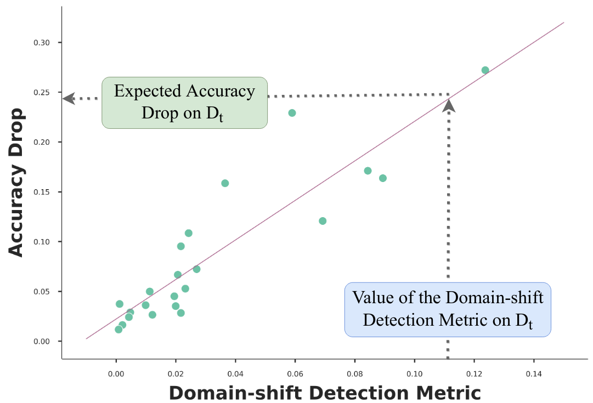
(Source: Elsahar et. al, 2019)
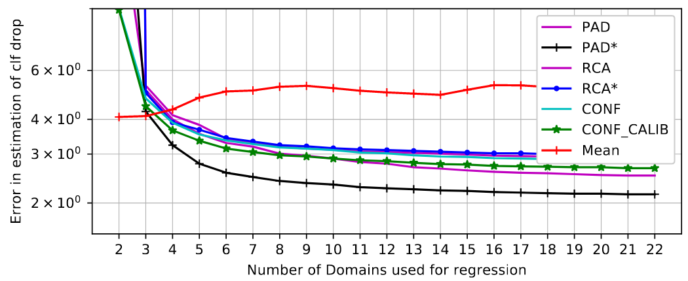
(Source: Elsahar et. al, 2019)
\[CONF= \frac{1}{|D_t|}\sum_{i:x\in{D_s}}q_i - \frac{1}{|D_s|}\sum_{i:x\in{D_t}}q_j \]
where \(q=max(softmax(z))^k\) and \(z\) is a logit score.
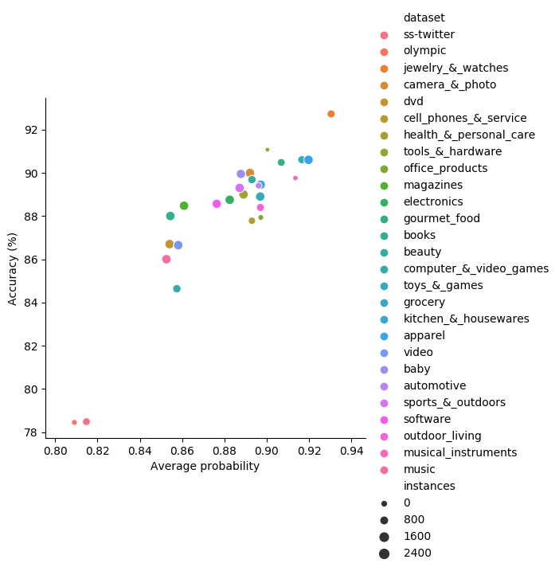
data oriented vs. model oriented
tl; didn't pay attention
- train BERT, distill to a char-based CNN
- use char-based CNNs to avoid the pipeline jungle
- take note of the probabilities on your test split